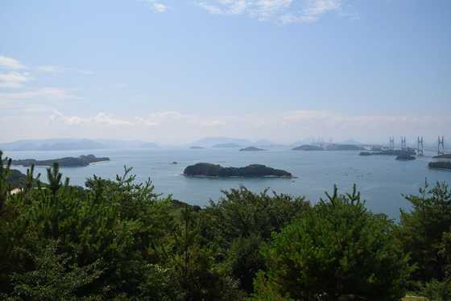
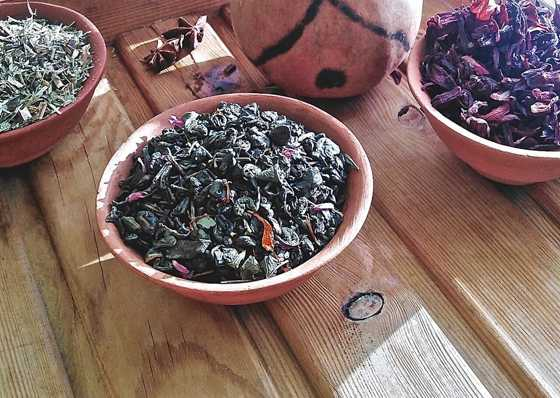
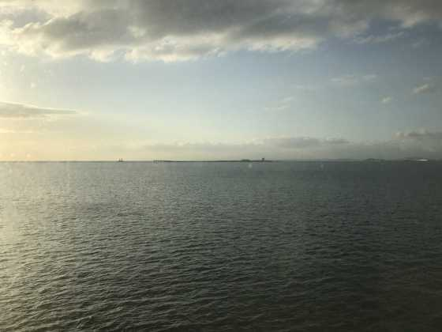
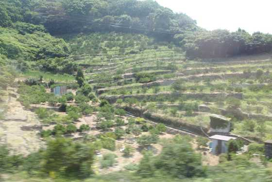

お店の由来・想い
寺に入りづらい人にも、まずコーヒーを。
大師堂喫茶室は、山口県周防大島町の観海山 妙善寺(浄土真宗本願寺派)の境内にあります。2024年に本堂で見つかった親鸞聖人の木像を安置するために建てられた大師堂に併設され、ゴールデンウィーク明けに一般向けに開かれました。
店主は15代目住職の大海裕孝さん。京都での大学時代に喫茶店へ通い詰めたというコーヒー好きで、「お寺には入りづらい」と感じる人にもまずコーヒーをきっかけに足を運んでもらい、住職がどんな人かを知ってもらいたい、という考えが紹介されています。
周防大島は明治期に多くの人がハワイへ移民として渡った島で、帰国者がコーヒーを持ち帰ったことから、コーヒーの文化が根づいていたと紹介されています。




情報源: 住職インタビュー記事(monochrome) / Instagram。上記以外の文や見出しは制作側の表現です。
口コミ
お客様の声(イメージ例)
イメージ例
お寺の中の喫茶室と聞いて少し緊張しましたが、静かで落ち着く空間でした。自分で挽いた豆のコーヒーは格別です。
イメージ例
住職さんとコーヒーの話をしているうちに、お寺がぐっと身近に感じられました。また来たいです。
イメージ例
島のドライブの途中に立ち寄りました。サイフォンで淹れる様子を眺める時間も楽しかったです。
上記は制作側が作成したイメージ例で、実在のお客様の声ではありません。

